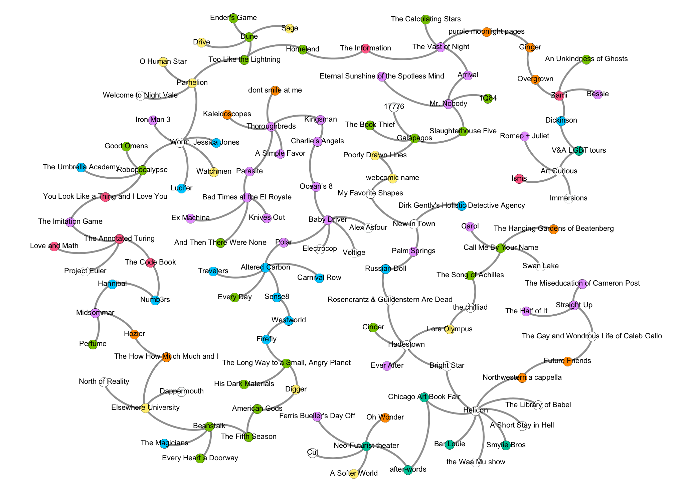

Never Be Bored
6 October 2020
Connecting the Dots
Homeland by Cory Doctorow; Charlie's Angels, 2019 Elizabeth Banks film; Numb3rs tv show; You Look Like a Thing and I Love You by Janelle Shane; Parasite, 2019 Bong Joon-ho film; the chilliad by Molly Of Geography webserial; Westworld tv show; Future Friends album by Superfruit; Dickinson tv show; after-words bookstore in Chicago, IL; webcomic name by Alex Norris; American Gods by Neil Gaiman; GINGER by BROCKHAMPTON; Russian Doll tv show.
Woohoo it's been two years of Never Be Bored! This blog is all about relating different types of media together, and in the twenty-five posts so far, I've written about over one hundred books, movies, tv shows, and more. We could plot out each of these posts on a graph—nodes for individual recommendations and edges connecting recs in the same post. So buckle up folks, today we're going to connect those dots so that we get one, big, beautiful connected graph.
Already some of the work is done. Too Like the Lightning is featured in Really Big Worms and The R Smith Edition. Worm is featured in The R Smith Edition, All Superheroes Need Therapy, and It's the End of the World as We Know It and I Feel Fine. The first twelve posts all got a bonus recommendation from A Year In Review. Kurt Vonnegut wrote both Slaughterhouse Five from Nonlinearity and Galápagos in And So On. Elsewhere University from Strange and Yet Familiar got a shoutout in A+ in Applied Magics.
Let's start off easy, making connections with what we've already got.
Do you hear that? Arrival, from Nonlinearity, and The Vast of Night, featured in Something in the sky, are two sci-fi movies about listening to aliens. For a modern take, with lots of scenes about trying to figure out xenolinguistics, go for Arrival, but if you'd rather something creepy and retro with dramatic monologues, give The Vast of Night a try.
Takeshi Kovacs is one bad ass mother fucker who is just over this shit, but still somehow gets roped into flashy fight scenes. If you liked that character in Altered Carbon, from To Whom Am I Speaking?, you'll like the story of Duncan Vizla, aka the Black Kaiser, an almost-retired hitman in Polar, a Year in Review bonus rec to Floor It.
Bright Star (featured in The Northwestern Edition) and Hadestown (featured in It's an old song) are both blues/jazz/folk musicals about a double love story. Bright Star is loosely based on a Missouri folk tale, Hadetown is inspired by Greek mythology. Both are excellent.
Cosmo Sheldrake (The How How Much Much and I from Strange and Yet Familiar) and Hozier (Hozier and Wasteland, Baby! from Daisies & Death) both create music that makes you imagine old fairy magic in the forest. Cosmo Sheldrake's "Hocking" is like what I'd envision playing at a fae celebration of summer solstice, while Hozier's "Wasteland, Baby!" is the sad love song from after the party's over.
And now, let's add entirely new nodes to our graph with new recommendations to connect posts.
Too Like the Lightning by Ada Palmer (Really Big Worms, The R Smith Edition) is a very idea-forward book, and (one of) the catalysts that kicks off the story is a stolen newspaper article draft. Ada Palmer is a professor who researches intellectual history, and it absolutely shows in her writing as her books explore the implications of a society based on certain ideas. Cory Doctorow is another favorite author of mine who also writes idea-forward fiction—if you liked Too Like the Lightning, try his Homeland, in which Marcus Yallow is entrusted with an archive documenting government and corporate crime, and has to figure out how to publish it without getting arrested. I would also highly recommend this book, available to download for free from Doctorow's website, if you liked The Information: A History, A Theory, A Flood by James Gleick (Something in the sky). Although Homeland is fictional, as you read you'll learn things too—about information security, the darkweb, evading surveillance, and protesting tips.
I want more action movies starring women, because I love a good fight sequence and watching things go boom, but I'm tired of watching men with big guns in movies with, like, one named woman character. Kingsman: The Secret Service (A Year in Review bonus rec to Non je ne regrette rien) just barely passes the Bechdel test, but I will give it a bonus point for having two badass women main characters who arent love interests (ugh, the bar is so low). And if you liked the aesthetic of Kingmen's gentlemen spies, then you might like Elizabeth Bank's 2019 reboot movie Charlie's Angels. Naomi Scott, Ella Balinska and Kristen Stweart all kicking ass on screen? Yes, please! Continuing in that vein, see also Ocean's 8 (Floor It) for an all-women heist crew, set on stealing diamonds from the Met Gala.
My favorite episodes of Hannibal (Daisies & Death) are the one-off monster-of-the-week type episodes, where the FBI is investigating a murder and Will Graham, profiler extraordinaire, is called in for help. If you're into crime shows like that, try Numb3rs, streaming on Hulu, a tv show about two brothers—one, Alan, an FBI agent and the other, Charlie, a mathematician. Together they solve crimes, using fluid dynamics, disease spread modeling, wavelet analysis, and many more areas of applied math. (I learned a little about sabermetrics, the statistical analysis of baseball, from one episode, so I dropped that term in conversation with a sports-obsessed acquaintance freshman year in college. We became good friends, and I'm pretty sure that conversation was part of why.) For more on applications of mathematics to real world problems, read The Code Book by Simon Singh, featured in On Computability, which details the math theory behind creating and cracking encryption over the centuries.
The Imitation Game, a Year in Review bonus rec to On Computability, is named for an artificial intelligence thought experiment proposed by Alan Turing in 1950, before anything resembling modern computers even existed. In Robopocalypse by Daniel H. Wilson, robots across the globe gain sentience and begin to turn against their human makers—hilariously in retrospect, I recommended this book in It's the End of the World as We Know It and I Feel Fine back in March. Anyway, between those two extremes, where is the field of artificial intelligence today? To learn more, try You Look Like a Thing and I Love You by Janelle Shane, a truly delightful book that will both show you how far research has come and will reassure you that the robot uprising won't be happening anytime soon.
Bad Times at the El Royale (Just you, and me, and this gun) unsurprisingly takes place at the El Royale hotel. For reasons that would be spoilers to name, the setting is essential to the plot of the film—the story could not have unfolded in the way that it did anywhere else. This is also true of Parasite, 2019 Bong Joon-ho film currently streaming on Hulu, where many scenes take place in a rich family's house—which was actually designed and built in pieces for the movie. An absolutely incredible dark comedy/thriller, Parasite explores the things a person might just do to get ahead. For another thriller with characters willing to go to extreme lengths for their own personal reasons, try Thoroughbreds, from Non je ne regrette rien.
Lore Olympus by Rachel Smythe, featured in It's an old song, retells the story of Persephone and Hades but in a vaguely modern setting—where the two first meet at a crowded party. For more modernized Greek myths, check out the chilliad by Molly Of Geography, a wildly funny adaptation of the Illiad. Follow along with Homer Bard, undeclared freshman Alpha Sigma Phi pledge, as he recounts the story of the epic prank war against the Trojan House. If your favorite characters from this ongoing webserial are Achilles "AC" Myrmidon and Pedro Klaus "PK" Liebling but were looking for something a little more traditional, then you might like Madeline Miller's The Song of Achilles, a retelling of Illiad from the point of view of Patroclus, recommended in Is it better to speak or die?.
Firefly (The Family We Made Along the Way) is a tv show with an interesting blend of aesthetics—some people wear dusty cowboy hats and some people live in floating mansions and there's a scene where the crew get a job to transport cattle from between planets. If you're into that, try the tv show Westworld, streaming on HBO, about a Western-themed amusement park, populated by android hosts—who talk and dress and live as if it's the 1800s, looking exactly like humans, with no idea that their entire world is a vacation destination for the wealthy. As the series continues and secrets are revealed, plot twists will keep you glued to the screen. See also Sense8 (To Whom Am I Speaking?), which likewise features lots of action and a cast of characters who keep secrets and deals with the question—what makes us different from each other?
In The Northwestern Edition I wrote about the different a cappella groups on campus; if you like that style of music then you might have heard of the group Pentatonix, the first a cappella group to win the Grammy for Best Instrumental Arrangement. Two members of the group, Mitch Grassi and Scott Hoying, also make up the duo Superfruit, and I adore their (synth-pop, not a cappella) album Future Friends. "Imaginary Parties" (which has an excellent music video) and "Bad 4 Us" are my song recs for Freckle and Caleb respectively, characters from The Gay and Wondrous Life of Caleb Gallo, the five-episode series from Baby if you love me, won't you please just give me a smile?.
If you're interested in queer art history, consider following Dan Vo on Instagram, one of the tour guides of the V&A's LGBTQ tours, recommended in The Eye of the Beholder. You might also like Dickinson, an Apple TV show about Emily Dickinson growing up, writing poetry, getting into trouble with her parents, and falling in love with her friend Susan. Although it's set in 19th century Massachusetts, the dialogue and music are thoroughly modern, which makes for a fun juxtaposition—in the first episode, Emily imagines going on a carriage ride with Death while "bury a friend" by Billie Eilish plays in the background. For more stories about the life of a queer poet, try Zami: A New Spelling of My Name by Audre Lorde, featured in Looking Forward, Looking Back, about her experiences growing up, writing poetry, getting into trouble with her parents, and falling in love with lots of people, in 1940s and 50s New York City.
Here's how you spend one perfect day in Chicago: you wake up late one November Saturday. Down in the Loop, you visit the beautiful Chicago Athletic Association, which despite the name is actually a hotel, for Chicago Art Book Fair (A Year in Review bonus rec to The Northwestern Edition). You browse brightly colored lithographs and maybe pick up a zine or two. Then you take a walk north, across the river, to E Illinois and Wabash, to after-words bookstore. Down in the basement, you look through the new and used books in search of something interesting. Take your time in River North, find something good to eat, because you have plenty of time before taking the Red Line up to Argyle, to catch a performance of the The Infinite Wrench by the Neo-Futurists, featured in Next!.
In My Favorite Shapes (This Might As Well Happen), we get to hear Julio Torres talk about, for example, an oval looking at his reflection in a pond and wishing he were a circle. Some of my favorite shapes are the pink blobs from Alex Norris's webcomic name, three-panel comics with a repeated punchline—an excellent of example of how sometimes you don't need a lot of fancy detail to convey emotion. For another webcomic about the absurdities of life, check out Poorly Drawn Lines by Reza Farazmand (And So On).
Forgotten gods and old magic tied to old places. In Digger (webcomic featured in The Family We Made Along the Way), a perfectly respectable wombat finds herself traveling strange lands and meeting a couple of gods (well, sort of). For another story of an ordinary person who gets caught up in the affairs of gods, try American Gods by Neil Gaiman, about an ex-convict who meets Mr. Wednesday, an American incarnation of the Norse deity Odin the All-Father. The things we are allowed to forget shape us—at one time, Odin had power because many people knew that he was real, but in this book, Mr. Wednesday is weakened because so many people have forgotten him. One of my favorite moments—in just about any written work I've ever read—is the line of dialogue in The Fifth Season by N. K. Jemisin (A+ in Applied Magics) that Revealed a Thing Forgotten. You'll know it when you see it, and any further description would be a major spoiler.
On the scale of how much singing is involved in rap albums, on one side you have something like neo-soul Overgrown (Looking Forward, Looking Back), where Ivy Sole shows off her vocals, and on the other you have R.A.P. Ferreira's purple moonlight pages (Something in the sky), which has more of a jazz-rap feel. Somewhere in between is GINGER by BROCKHAMPTON, which has both catchy sung hooks and rapid-fire bars; two of my favorite songs off this album are "SUGAR" and "IF YOU PRAY RIGHT." I've seen them in concert twice and I look forward to being able to again, someday.
Lastly, if you liked Palm Springs, from This Might As Well Happen, a rom-com in which Nyles and Sarah fall asleep and wake up on the day of Sarah's sister's wedding over and over again, but were looking for something a bit darker, then you might like Russian Doll, a black comedy tv series that begins when two people keep dying and reliving the same night. For another duo of characters with great dialogue bumbling through life and death together, try Rosencrantz & Guildenstern Are Dead by Tom Stoppard, featured in It's an old song.
Here's a visualization of this blog, with and without labels:

Never Be Bored is a recommendation blog documenting my journey through my never-ending queue. For each thing I like, I'm recommending things to go with it based on similar themes—not just books for book posts or movies for movie posts, but music and comics too, things you might not see otherwise. Read the archives here. For a permalink to this post, click here.